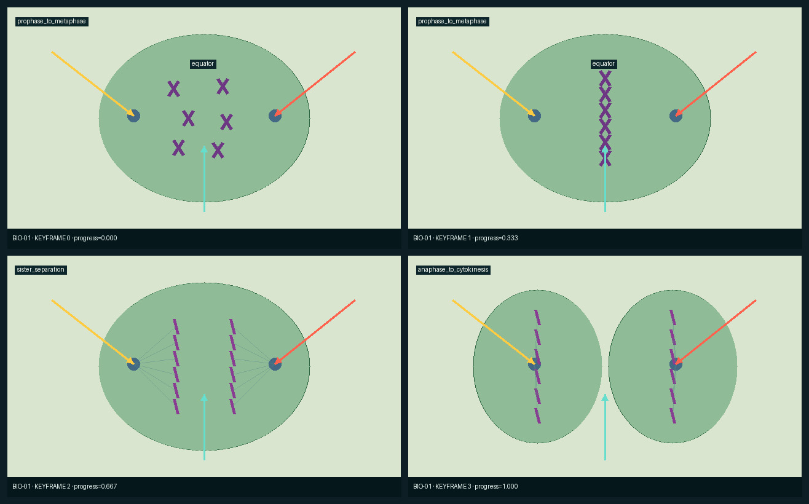
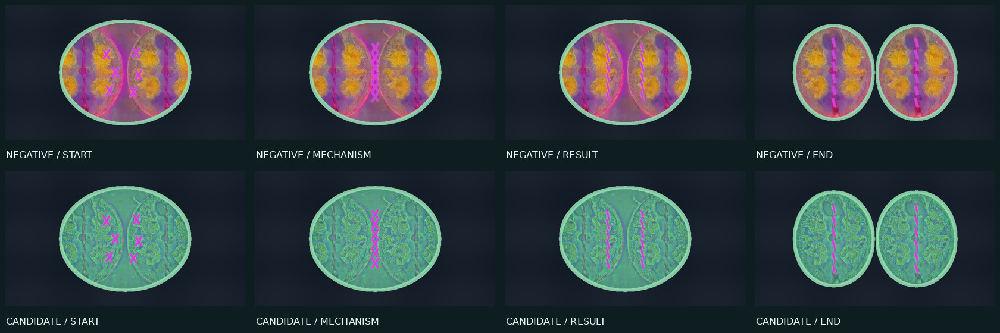
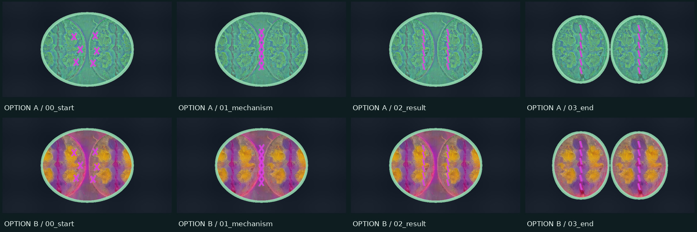
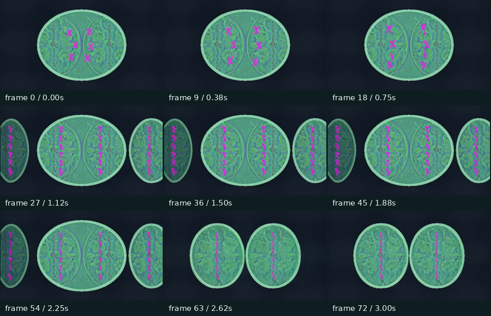
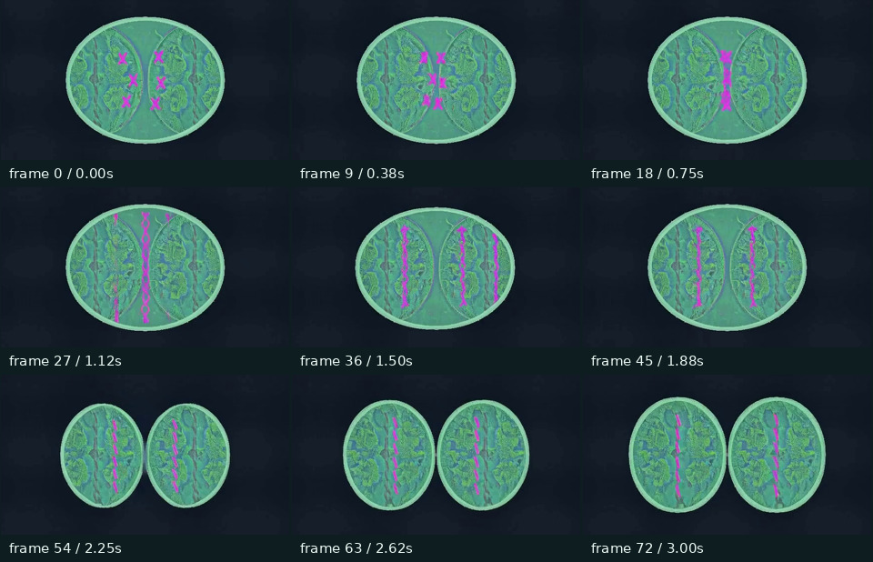
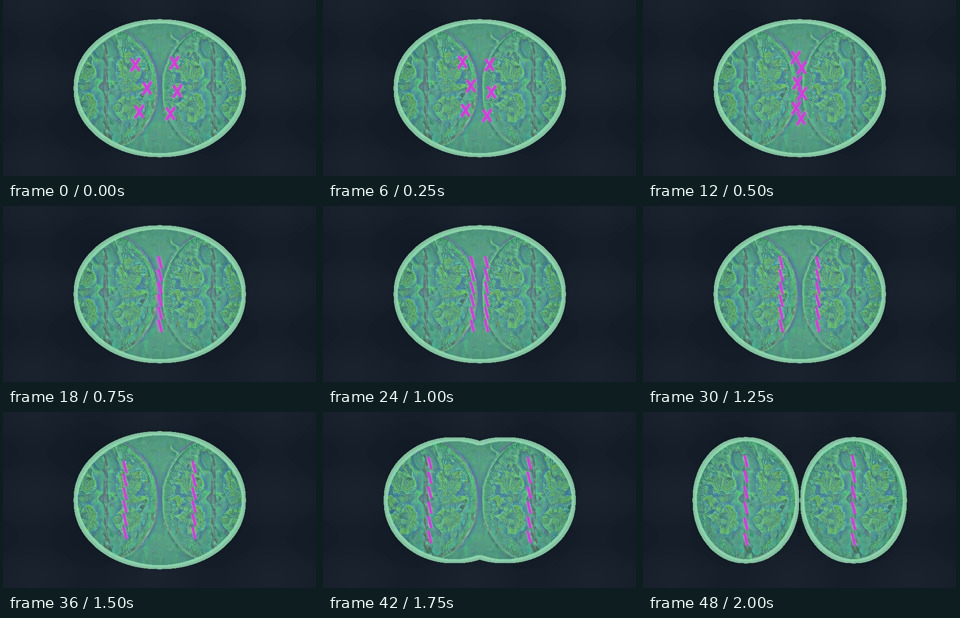

LOOP-S3-0002
S3.6 rerun 1
把 BIO-01 真正跑完，而不是再说“框架通过”
本轮只解决一个清楚的问题：一套程序定义的有丝分裂，怎样用同一份 生成式外观做出四张机制正确的关键帧，并验证视频模型能不能守住“一个细胞分成两个、 六条父谱系平均分配”这一事实。
output/phase-6 只让 BIO-01 和
GEO-02 通过 G0/G1，却把 S3.6 标为 passed；这违反 loop.md 的五学科完整
发布门。旧目录保留作历史证据，但其 alpha 结论已在 ledger 中标为
superseded_invalid_phase_exit。当前 Stage 3 仍是未发布候选。1. 这一轮到底覆盖了哪些案例
| 角色 | 案例 | 为什么选它 | 结果 |
|---|---|---|---|
| 目标 | BIO-01 有丝分裂 | 有 accepted 外观目标和完整语义层，但旧 Stage 3 没有 G2–G4。 | 图片通过；视频模型失败；确定性写实回退通过 |
| 跨学科回归 A | CHEM-01 滴定 | 共享 region/object 语义和 State Renderer 核心。 | 4 帧逐文件一致 |
| 跨学科回归 B | MATH-02 拼图 | 共享 object_identity，但几何策略是 preserve_exact。 | 4 帧逐文件一致 |
| 历史回归 | 三角洲 | 防止新核心覆盖 Stage 1 已接受结果。 | 2 个冻结哈希有效 |
十个正式案例加三角洲的 11 份输入合同都通过 smoke。本轮没有把 CHEM/BIO 三个案例 说成“整个十案例已经完成”。
2. 程序先把生物事实说清楚
程序图不是最终美术稿，而是事实源。它明确保存四个状态、细胞区域和每条染色体的 身份。region / mask（区域遮罩）是一张黑白数组：白色像素表示细胞内部，黑色 表示不能写入细胞材质。object identity（对象身份层）是 JSON：每条对象有 ID、 中心、线段、父 ID 和左/右目的地；它不是从图片里猜出来的。



机器门读到的对象数是 [6, 6, 12, 12]；把一条复制 X 算作两个谱系单位后，
四帧总量均为 [12, 12, 12, 12]。最终六个父 ID 每个恰好对应两个孩子，左右各 6。
3. 外观从哪里来：旧 SDXL 候选只当材质供体
这里没有新跑图片模型。冻结供体来自 Stage 2 的四张 SDXL 候选，选择历史编号 3104。 seed只是扩散初始噪声编号，用于复现，不是画面含义。供体生成时，程序终帧先经过 Canny边缘算法得到黑底白线，再送进 SDXL Canny ControlNet。ControlNet 读取白线和扩散中间状态，返回结构残差给 SDXL Base 1.0；SDXL 同时读取文字， 最后输出 RGB 图片。


当年模型的完整提示词
正向：
Top-down fluorescence micrograph of exactly two daughter cells after mitosis, translucent membranes, subtle cytoplasm, magenta chromosomes, dark background, exactly six separated straight chromatids inside each cell, two cells, six chromatids each, symmetric layout, no text
负向：
third cell, extra cells, one cell, extra chromatids, missing chromatids, chromosome clumps, duplicated nuclei, oversized nucleus, anatomy, tissue, embryos, bacteria, labels, arrows, numbers, letters, text, user interface, watermark, plastic icon, cartoon, blur
| 参数 | 值 | 控制什么 |
|---|---|---|
| 模型 | SDXL Base 1.0 FP16 + SDXL Canny ControlNet FP16 | Base 负责成图；ControlNet 把边缘结构残差注入 Base；FP16 是半精度权重。 |
| control scale | 0.85 | ControlNet 残差对结构的影响大小；越高越贴线，也越可能刻痕。 |
| img2img strength | 0.5 | 输入图被加噪并允许重绘的幅度；本历史记录虽标为该字段，pipeline 实际登记为 controlnet_t2i。 |
| guidance / CFG | 6.0 | 文字提示对去噪方向的放大系数，不是清晰度。 |
| steps | 30 | 去噪迭代次数；不是动画帧数。 |
| scheduler | EulerDiscreteScheduler | 决定每一步怎样沿噪声轨迹更新。 |
| 尺寸 / seed | 1024×576；3101–3104 | 四张固定候选；正负提示均未超过两个 77-token 限制。 |
4. 本轮单变量实验：整图贴入 vs 只取材质统计
两行图片的程序状态、供体、背景、膜宽、染色体绘制和颜色完全相同；唯一变化是
region_material.transfer_mode。
负对照 raw_underlay：供体 RGB 直接贴进程序 cell region。
候选 highpass_statistics：供体 − 5 px 模糊供体 → 除以标准差 → 截断异常值 →
只把细颗粒残差加到固定细胞质颜色；细胞轮廓和染色体全部来自程序。


| 方案 | 材质 | 光照 | 稳定 | 不塑料 | 教学 | 加权 | 硬门 |
|---|---|---|---|---|---|---|---|
| A / 高频统计 | 4.2 | 4.0 | 5.0 | 4.1 | 4.6 | 4.34 | 通过 |
| B / 整图贴入 | 3.8 | 3.4 | 5.0 | 3.0 | 1.8 | 3.6 | 外观→几何泄漏 |
候选重跑两次，四张 PNG 的 SHA-256 逐张相同。由于本轮没有新运行图片模型， 多 seed 稳健性标记为“不适用”；不能把确定性重建冒充成多 seed 成功。
5. 为什么这个改动能进入核心，而不是只对细胞有效
核心新增的是两个不认识案例 ID 的算子：region_material 读取任意 region
并隔离外观供体的低频几何；identity_stroke读取任意 polyline 对象及 JSON
样式表。BIO 的绿色、洋红色和谱系单位规则留在版本 plan，不写进 Python 核心。
| 回归 | 结果 | 证据 |
|---|---|---|
| CHEM-01 | 逐帧 SHA-256 完全一致 | 4 帧 |
| MATH-02 | 逐帧 SHA-256 完全一致 | 4 帧 |
| 三角洲历史 | 两个冻结 SHA-256 有效 | 序列图 + 最终改道图 |
| 11 合同 smoke | 全部通过 | preflight.json |
这足以接受“图片 State Renderer 的新增算子”为 core；但后面的视频回退只有 BIO 一个对象分裂案例，所以只记为 case-specific，不能偷晋升成通用运动默认。
6. 视频模型实际试了什么
LTX-2.3是当前部署的首尾帧视频模型：只原生接收第一张、最后一张和文字。 它不原生接收程序视频、mask、对象轨迹或中间帧。motion contract把完整 49 帧 程序时间线压成对象清单、事件顺序、单调趋势和禁区，再编译为以下 L1 文字：
L1 完整正向与负向运动提示词
POSITIVE Locked straight-on scientific microscopy illustration of the exact same green cell material on the exact same dark background in every supplied frame. Keep exactly 1 deformable cell region, exactly 6 replicated chromosome lineage. The six magenta X-shaped replicated chromosomes move to and align along the center of the one cell. Then Each X separates into exactly two sister chromatids without any chromosome lineage appearing or disappearing. Then Exactly six sister chromatids move left and exactly six move right. Then Only after that allocation, the single green cell membrane pinches into exactly two daughter cells, each containing six sister chromatids. State constraints: cell_region_count: one_then_two_once; replicated_chromosome_count: six_to_zero; sister_chromatid_count: zero_to_twelve; lineage_unit_count: constant_twelve; left_destination_count: zero_to_six; right_destination_count: zero_to_six. Preserve dark background, green cell material and mint membrane, magenta chromosome identity color, framing, scale, lighting and camera, six parent lineages and their two-child mapping. End exactly at the supplied last frame. One continuous physically or mathematically understandable transition. Locked camera. NEGATIVE extra or missing chromosome lineage, more than two daughter cells, cell fusion after division, chromosomes dissolving, multiplying, turning into organelles or leaving the cell, orange organelles or pink vertical donor bands, camera movement or scene change, camera movement, pan, zoom, tilt, perspective change, scene change, abrupt cut, flicker, jitter, ghosting, uncontracted object birth or loss, watermark
| 视频参数 | 值 | 含义 |
|---|---|---|
| checkpoint | ltx-2.3-22b-dev-fp8 | FP8 视频生成权重；不是 SDXL。 |
| text encoder | Gemma 3 12B FP4 mixed | 把运动文字编码成 conditioning。 |
| LoRA / strength | distilled 1.1 / 0.5 | 对基础视频模型施加蒸馏适配的强度。 |
| guide strength | 0.7 | 首尾图像引导强度，不等于 ControlNet scale。 |
| CFG | 1.0 | 视频文字 guidance；本工作流使用蒸馏采样。 |
| 帧数 | 73 @ 24 fps | 3.04 秒；L2 为 3×25，去掉重复边界后仍是 73。 |
| seed | 2026073120（L2 后两段 +1/+2） | 固定视频噪声起点，禁止看结果后补抽。 |
L1：首尾 + 运动合同

L2：四张关键帧分成三个相邻片段

当前回退：49 个程序状态全部走同一 State Renderer
这次没有退回原始绿色程序视频。程序 provider 在每个 frame_index/48
重新导出 region 与 identity；同一张 SDXL 材质供体、同一 highpass 规则和同一对象样式
渲染全部 49 帧。也就是说，程序连续帧真正进入了最终写实运动链。

诚实限制：这是程序确定性运动 + 生成式材质，不是 LTX 生成运动；只在 BIO/object_division 登记为 case-specific fallback。
7. Agent 这次怎样自我迭代
- 读取
loop.md与workflow.html，发现旧 S3.6 退出条件执行错误。 - 写 observation.json，按硬失败、影响范围和距发布出口排序。
- 冻结 target + 两个跨学科回归 + 历史回归，以及一个单变量假设。
- 先跑 11 合同、Visual Target、语义层、供体和模型来源预检。
- 保留负对照和候选；第一次 G3 因浮点 base 与 uint8 图片比较误报 1/255，旧错杀保存为 g3-v1-rejected.json，只修量表域。
- 图片通过才运行 L1；L1 失败才运行预算内最后一个 L2。
- L1/L2 均因机制失败被拒绝；随后验证零模型全时间线写实回退。
- 更新 ledger、失败模式、accepted baselines、release policy 和下一问题；没有只停在 HTML。
8. 当前项目状态，不再夸大
| 结论 | 状态 |
|---|---|
| BIO-01 图片 G2/G3 | 通过；新增两个通用 State Renderer 算子 |
| BIO-01 LTX 视频 | L1、L2 均失败，原始视频保留 |
| BIO-01 完整时间线回退 | 通过；case-specific |
| S3.6 五学科发布门 | 仍未通过：GEO-02 是 provisional 且没有正式 G2–G4 |
| 测试 | 12 passed |
下一问题已经从“继续烧杯”改成 GEO-02 的 Visual Target 审计。若现有地理正反例存在 互斥外观选择，Agent 不能自动把 provisional 改成 accepted；在此之前也不允许运行正式模型候选。
9. 从零复现
# 1. 图片：预检、两条确定性对照、硬门和跨案例回归 .venv/bin/python -m modules.video_model.stage3.phase6_recovery render # 2. 视频模型预检与候选（需要已部署 ComfyUI 服务） PYTHONPATH=/workspace/Live-Document /workspace/comfyui-rocm-env/bin/python \ -m modules.video_model.stage3.phase6_bio_video prepare --level L1 PYTHONPATH=/workspace/Live-Document /workspace/comfyui-rocm-env/bin/python \ -m modules.video_model.stage3.phase6_bio_video generate --level L1 PYTHONPATH=/workspace/Live-Document /workspace/comfyui-rocm-env/bin/python \ -m modules.video_model.stage3.phase6_bio_video audit --level L1 # L2 同理，把 L1 改为 L2 # 3. 零模型的 49 帧写实回退 PYTHONPATH=/workspace/Live-Document /workspace/comfyui-rocm-env/bin/python \ -m modules.video_model.stage3.phase6_bio_fallback # 4. 账本、报告和测试 .venv/bin/python -m modules.video_model.stage3.phase6_recovery_finalize .venv/bin/python -m pytest -q modules/video_model/stage3/tests
图片阶段用项目 .venv；视频编解码使用已经部署并登记的
/workspace/comfyui-rocm-env，因为项目 .venv 没有 av。没有静默安装
或替换依赖。完整文件哈希见 phase6-rerun-manifest.json。